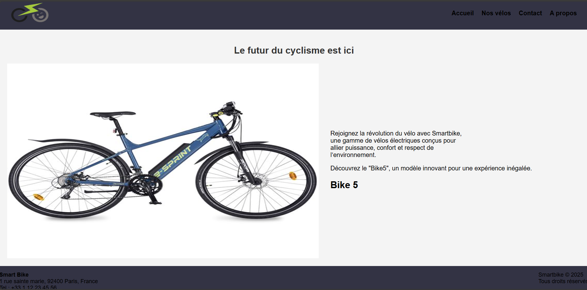

📁 Mes réalisations
Voici les projets sur lesquels j’ai travaillé durant ma formation et mes stages. Chaque réalisation est accompagnée d’un résumé, des compétences mobilisées et d’un bilan personnel.
.🥼 Application E-commerce NOBO
Objectif : Développer un site de vente en ligne de vêtements non genrés
Durée : 1 mois
Équipe : 4 personnes
Rôle : J’ai été chargée de créer la page d’accueil en HTML et de concevoir la base de données, puis de l’intégrer au site. J’ai également assuré la liaison entre le front-end et la base de données pour afficher dynamiquement les informations des vélos.
Technologies utilisées :
Dépôt Git : Voir le code
Bilan : Ce projet m’a permis de renforcer mes compétences en HTML, en structuration de base de données, et en intégration front/back. J’ai également appris à collaborer efficacement en équipe sur un projet complet, de la conception à la mise en ligne.


🌐 Infrastructure réseau d’une école
Objectif : Concevoir une infrastructure réseau complète pour un établissement scolaire, incluant la topologie, l’adressage IP et la configuration des équipements.
Durée : 2 semaines
Équipe : Seule
Rôle : J’ai réalisé la conception du réseau, le design de la topologie, et la simulation complète à l’aide de Cisco Packet Tracer. J’ai configuré les routeurs, les switches, les VLANs et les plans d’adressage IP.
Technologie utilisée :
Dépôt Git : Voir le code


Bilan : Ce projet m’a permis de mieux comprendre les notions de topologie, d’adressage IP, de routage statique et dynamique, ainsi que la configuration d’un réseau fonctionnel dans un environnement simulé.
📱 Application mobile : Jeu du Pendu
Objectif : Créer un jeu mobile éducatif en Java, permettant aux utilisateurs d’enrichir leur culture général tout en s’amusant.
Durée : 3 semaines
Équipe : 4 personnes
Rôle : Design, intégration CSS et déploiement sur Netlify
Technologies utilisées :
Dépôt Git : Voir le code


Bilan : Ce projet m’a permis de renforcer mes compétences en Javascript, en logique de programmation, et en création d’interfaces mobiles intuitives.
📦 Application web : StockMyProducts
Objectif : Développer une application permettant de gérer un stock de produits (ajout, modification, suppression, consultation) directement depuis le navigateur.
Durée : 1 semaine
Équipe : Seule
Rôle : J’ai conçu l’interface, développé toute la logique JavaScript, géré le stockage des données via LocalStorage et structuré l’application pour qu’elle soit simple, intuitive et responsive.
Technologies utilisées :
🎯 Fonctionnalités principales
- Ajout de produits (nom, quantité, prix, catégorie…)
- Modification et suppression des produits
- Stockage des données via LocalStorage
- Affichage dynamique du tableau des produits
- Interface simple, moderne et responsive
🛠️ Compétences mobilisées
- Manipulation du DOM en JavaScript
- Gestion des événements (click, submit…)
- Stockage local des données
- Création d’une interface utilisateur ergonomique
- Organisation du code et logique algorithmique


Lien du projet : Voir l’application
Bilan : Ce projet m’a permis de renforcer mes compétences en JavaScript, en manipulation du DOM et en gestion de données locales. J’ai appris à structurer une application complète sans backend et à créer une interface claire et intuitive.